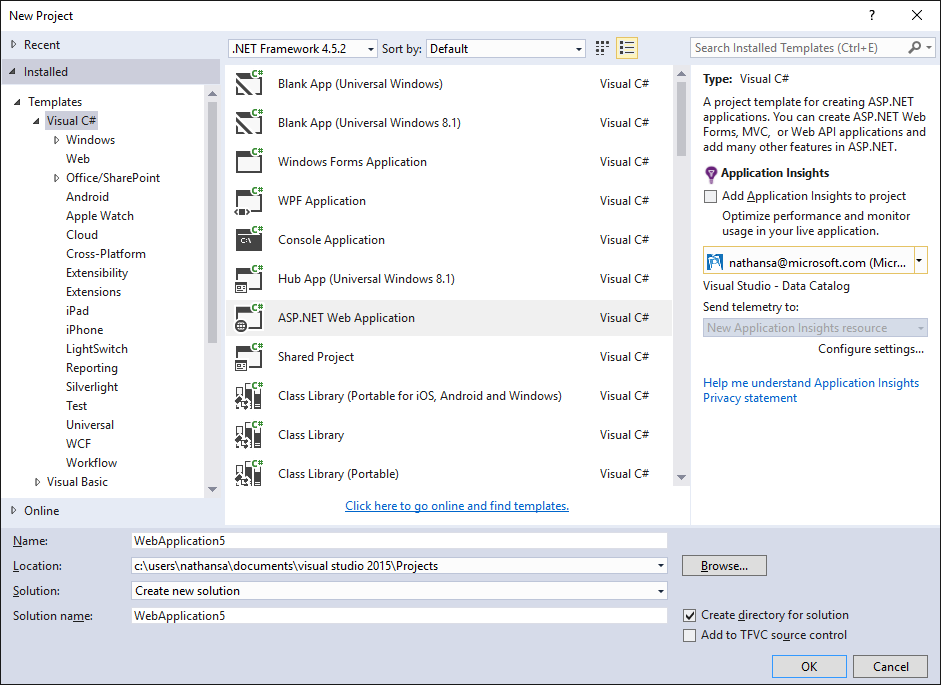
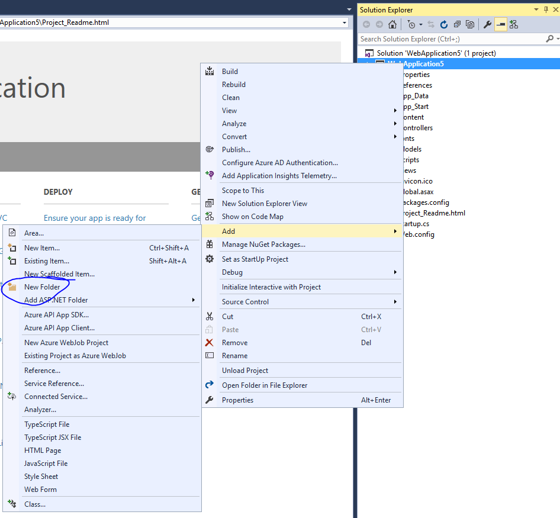
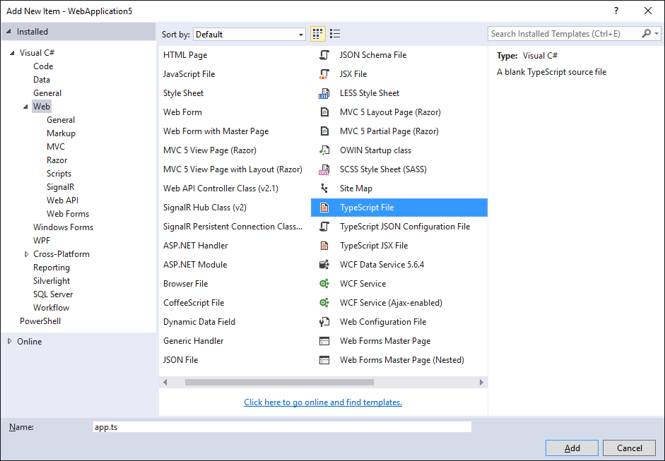
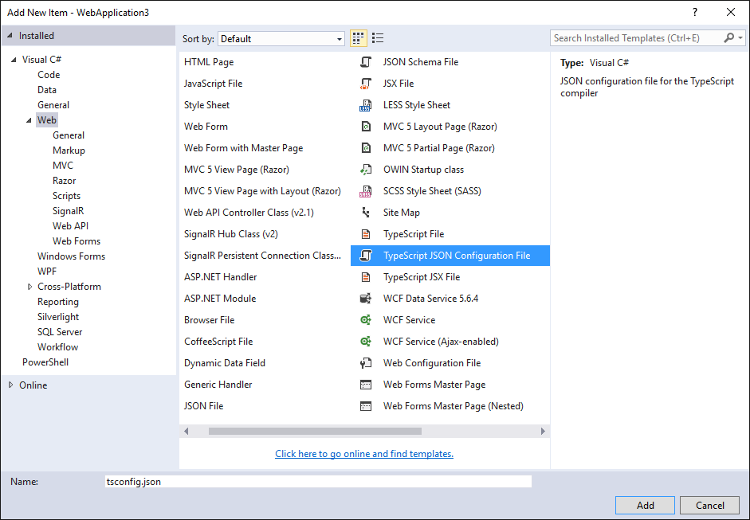
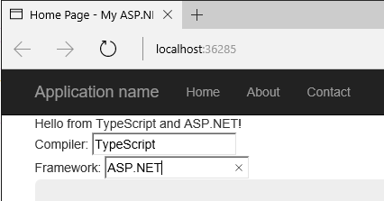
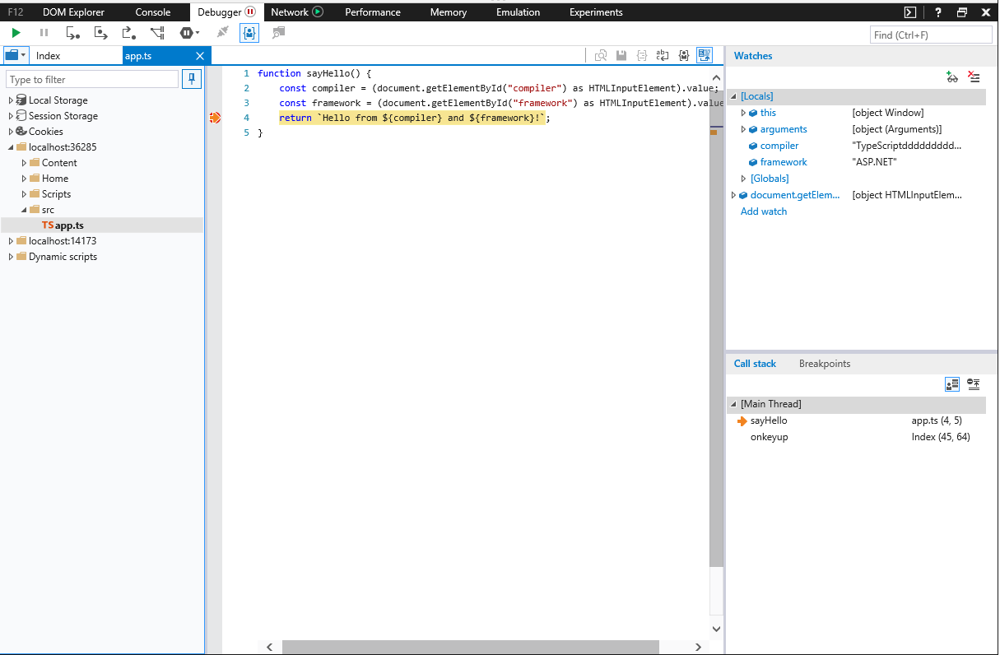

ASP.NET Core
注意：Visual Studio 2017和最新版本的ASP.NET的更新即将推出！
安装 ASP.NET Core 和 TypeScript
首先，若有必要请安装 ASP.NET Core。 这个快速上手指南使用的是 Visual Studio ，若要使用 ASP.NET Core 你需要有 Visual Studio 2015。
其次，如果你的 Visual Studio 中没有包含 TypeScript，你可以从这里安装TypeScript for Visual Studio 2015。
新建工程
-
选择 File
-
选择 New Project （Ctrl + Shift + N）
-
选择 Visual C#
-
选择 ASP.NET Web Application

-
选择 ASP.NET 5 Empty 工程模板
取消复选 "Host in the cloud" 本指南将使用一个本地示例。
运行此应用以确保它能正常工作。
设置服务项
在 project.json 文件的 "dependencies" 字段里添加:
"Microsoft.AspNet.StaticFiles": "1.0.0-rc1-final"
最终的 dependencies 部分应该类似于下面这样：
"dependencies": {
"Microsoft.AspNet.IISPlatformHandler": "1.0.0-rc1-final",
"Microsoft.AspNet.Server.Kestrel": "1.0.0-rc1-final",
"Microsoft.AspNet.StaticFiles": "1.0.0-rc1-final"
},
用以下内容替换 Startup.cs 文件里的 Configure 函数：
public void Configure(IApplicationBuilder app)
{
app.UseIISPlatformHandler();
app.UseDefaultFiles();
app.UseStaticFiles();
}
添加 TypeScript
下一步我们为 TypeScript 添加一个文件夹。

将文件夹命名为 scripts。
添加 TypeScript 代码
在scripts上右击并选择New Item。 接着选择
TypeScript File（也可能 .NET Core 部分），并将此文件命名为app.ts。

添加示例代码
将以下代码写入app.ts文件。
function sayHello() {
const compiler = (document.getElementById("compiler") as HTMLInputElement).value;
const framework = (document.getElementById("framework") as HTMLInputElement).value;
return `Hello from ${compiler} and ${framework}!`;
}
构建设置
配置 TypeScript 编译器
我们先来告诉TypeScript怎样构建。 右击scripts文件夹并选择
New Item。 接着选择
TypeScript Configuration File，保持文件的默认名字为tsconfig.json。

将默认的tsconfig.json内容改为如下所示：
{
"compilerOptions": {
"noImplicitAny": true,
"noEmitOnError": true,
"sourceMap": true,
"target": "es5"
},
"files": [
"./app.ts"
],
"compileOnSave": true
}
看起来和默认的设置差不多，但注意以下不同之处：
- 设置
"noImplicitAny": true。 - 显式列出了
"files"而不是依据"excludes"。 - 设置
"compileOnSave": true。
当你写新代码时，设置"noImplicitAny"选项是个不错的选择 — 这可以确保你不会错写任何新的类型。 设置
"compileOnSave"选项可以确保你在运行web程序前自动编译保存变更后的代码。
配置 NPM
现在，我们来配置NPM以使用我们能够下载JavaScript包。 在工程上右击并选择
New Item。 接着选择
NPM Configuration File，保持文件的默认名字为package.json。 在
"devDependencies"部分添加"gulp"和"del"：
"devDependencies": {
"gulp": "3.9.0",
"del": "2.2.0"
}
保存这个文件后，Visual Studio将开始安装gulp和del。 若没有自动开始，请右击package.json文件选择 Restore Packages。
设置 gulp
最后，添加一个新JavaScript文件gulpfile.js。 键入以下内容：
/// <binding AfterBuild='default' Clean='clean' />
/*
This file is the main entry point for defining Gulp tasks and using Gulp plugins.
Click here to learn more. http://go.microsoft.com/fwlink/?LinkId=518007
*/
var gulp = require('gulp');
var del = require('del');
var paths = {
scripts: ['scripts/**/*.js', 'scripts/**/*.ts', 'scripts/**/*.map'],
};
gulp.task('clean', function () {
return del(['wwwroot/scripts/**/*']);
});
gulp.task('default', function () {
gulp.src(paths.scripts).pipe(gulp.dest('wwwroot/scripts'))
});
第一行是告诉Visual Studio构建完成后，立即运行'default'任务。 当你应答 Visual Studio 清除构建内容后，它也将运行'clean'任务。
现在，右击gulpfile.js并选择Task Runner Explorer。 若'default'和'clean'任务没有显示输出内容的话，请刷新explorer：
编写HTML页
在wwwroot中添加一个新建项 index.html。 在
index.html中写入以下代码：
<!DOCTYPE html>
<html>
<head>
<meta charset="utf-8" />
<script src="scripts/app.js"></script>
<title></title>
</head>
<body>
<div id="message"></div>
<div>
Compiler: <input id="compiler" value="TypeScript" onkeyup="document.getElementById('message').innerText = sayHello()" /><br />
Framework: <input id="framework" value="ASP.NET" onkeyup="document.getElementById('message').innerText = sayHello()" />
</div>
</body>
</html>
测试
- 运行项目。
- 在输入框中键入时，您应该看到一个消息：

调试
- 在 Edge 浏览器中，按 F12 键并选择 Debugger 标签页。
- 展开 localhost 列表，选择 scripts/app.ts
- 在
return那一行上打一个断点。 - 在输入框中键入一些内容，确认TypeScript代码命中断点，观察它是否能正确地工作。

这就是你需要知道的在ASP.NET中使用TypeScript的基本知识了。 接下来，我们引入Angular，写一个简单的Angular程序示例。
添加 Angular 2
使用 NPM 下载所需的包
在 package.json 文件的 "dependencies" 添加 Angular 2 和 SystemJS：
"dependencies": {
"angular2": "2.0.0-beta.11",
"systemjs": "0.19.24",
},
更新 tsconfig.json
现在安装好了Angular 2及其依赖项，我们需要启用TypeScript中实验性的装饰器支持。 我们还需要添加ES2015的声明，因为Angular使用core-js来支持像
Promise的功能。 在未来，装饰器会成为默认设置，那时也就不再需要这些设置了。
添加"experimentalDecorators": true, "emitDecoratorMetadata": true到"compilerOptions"部分。
然后，再添加
"lib": ["es2015", "es5", "dom"]到"compilerOptions"，以引入ES2015的声明。
最后，我们需要添加
"./model.ts"到"files"里，我们接下来会创建它。 现在
tsconfig.json看起来如下：
{
"compilerOptions": {
"noImplicitAny": true,
"noEmitOnError": true,
"sourceMap": true,
"experimentalDecorators": true,
"emitDecoratorMetadata": true,
"target": "es5",
"lib": [
"es2015", "es5", "dom"
]
},
"files": [
"./app.ts",
"./model.ts",
"./main.ts",
],
"compileOnSave": true
}
将 Angular 添加到 gulp 构建中
最后，我们需要确保 Angular 文件作为 build 的一部分复制进来。 我们需要添加：
- 库文件目录。
- 添加一个
lib任务来输送文件到wwwroot。 - 在
default任务上添加lib任务依赖。
更新后的 gulpfile.js 像如下所示：
/// <binding AfterBuild='default' Clean='clean' />
/*
This file is the main entry point for defining Gulp tasks and using Gulp plugins.
Click here to learn more. http://go.microsoft.com/fwlink/?LinkId=518007
*/
var gulp = require('gulp');
var del = require('del');
var paths = {
scripts: ['scripts/**/*.js', 'scripts/**/*.ts', 'scripts/**/*.map'],
libs: ['node_modules/angular2/bundles/angular2.js',
'node_modules/angular2/bundles/angular2-polyfills.js',
'node_modules/systemjs/dist/system.src.js',
'node_modules/rxjs/bundles/Rx.js']
};
gulp.task('lib', function () {
gulp.src(paths.libs).pipe(gulp.dest('wwwroot/scripts/lib'))
});
gulp.task('clean', function () {
return del(['wwwroot/scripts/**/*']);
});
gulp.task('default', ['lib'], function () {
gulp.src(paths.scripts).pipe(gulp.dest('wwwroot/scripts'))
});
此外，保存了此gulpfile后，要确保 Task Runner Explorer 能看到 lib 任务。
用 TypeScript 写一个简单的 Angular 应用
首先，将 app.ts 改成：
import {Component} from "angular2/core"
import {MyModel} from "./model"
@Component({
selector: `my-app`,
template: `<div>Hello from {{getCompiler()}}</div>`
})
class MyApp {
model = new MyModel();
getCompiler() {
return this.model.compiler;
}
}
接着在 scripts 中添加 TypeScript 文件 model.ts:
export class MyModel {
compiler = "TypeScript";
}
再在 scripts 中添加 main.ts：
import {bootstrap} from "angular2/platform/browser";
import {MyApp} from "./app";
bootstrap(MyApp);
最后，将 index.html 改成：
<!DOCTYPE html>
<html>
<head>
<meta charset="utf-8" />
<script src="scripts/lib/angular2-polyfills.js"></script>
<script src="scripts/lib/system.src.js"></script>
<script src="scripts/lib/rx.js"></script>
<script src="scripts/lib/angular2.js"></script>
<script>
System.config({
packages: {
'scripts': {
format: 'cjs',
defaultExtension: 'js'
}
}
});
System.import('scripts/main').then(null, console.error.bind(console));
</script>
<title></title>
</head>
<body>
<my-app>Loading...</my-app>
</body>
</html>
这里加载了此应用。 运行 ASP.NET 应用，你应该能看到一个 div 显示 "Loading..." 紧接着更新成显示 "Hello from TypeScript"。